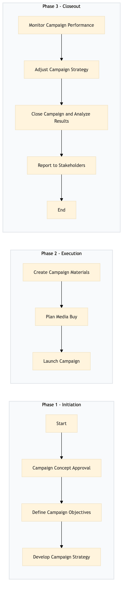

| Role | Steps |
|---|---|
| Marketing Director | 1.1 3.1 3.3 3.4 |
| Marketing Manager | 1.2 2.3 3.2 |
| Marketing Specialist | 1.3 |
| Creative Designer | 2.1 |
| Media Buyer | 2.2 |
| Marketing Analyst | 3.1 |
| Step | Name | Role | System | Input | Output | KPI | Dec? | Exc? | Pain Point / Risk |
|---|---|---|---|---|---|---|---|---|---|
| 1.1 | Campaign Concept Approval | Marketing Director | Oracle OPERA Cloud | Campaign proposal document | Approved campaign concept | Approval within 24 hours | Y | N | Delays in obtaining approval from senior management |
| 1.2 | Define Campaign Objectives | Marketing Manager | Marriott Bonvoy CRM | Approved campaign concept | Campaign objectives document | Objectives defined within 3 days | N | Y | Misalignment of objectives with hotel's overall strategy |
| 1.3 | Develop Campaign Strategy | Marketing Specialist | Microsoft Power BI | Campaign objectives document | Campaign strategy document | Strategy developed within 5 days | N | Y | Inadequate data analysis for campaign targeting |
| 2.1 | Create Campaign Materials | Creative Designer | Adobe Creative Suite | Campaign strategy document | Digital and print campaign materials | Materials ready within 7 days | N | Y | Inconsistent branding across different materials |
| 2.2 | Plan Media Buy | Media Buyer | SynXis CRS | Campaign strategy document, budget allocation | Media buy plan | Plan finalized within 10 days | N | Y | Budget constraints affecting media reach |
| 2.3 | Launch Campaign | Marketing Manager | Oracle OPERA Cloud, Marriott Bonvoy CRM | Campaign materials, media buy plan | Launched campaign | Campaign live within 14 days of approval | N | Y | Technical issues with campaign launch |
| 3.1 | Monitor Campaign Performance | Marketing Analyst | Microsoft Power BI, Oracle OPERA Cloud | Campaign launch details | Performance report | Daily performance monitoring | Y | N | Lack of real-time analytics tools |
| 3.2 | Adjust Campaign Strategy | Marketing Manager | Oracle OPERA Cloud, Microsoft Power BI | Performance report | Adjusted campaign strategy | Strategy adjustments within 24 hours of performance review | Y | N | Resistance to change in marketing strategies |
| 3.3 | Close Campaign and Analyze Results | Marketing Director | Oracle OPERA Cloud, Marriott Bonvoy CRM | Final performance report | Campaign closure document, lessons learned | Campaign closed within 1 week of completion | N | Y | Incomplete data collection for analysis |
| 3.4 | Report to Stakeholders | Marketing Director | Microsoft Power BI, Salesforce | Campaign closure document, lessons learned | Stakeholder report | Report delivered within 2 days of campaign closure | N | Y | Difficulty in communicating complex data to non-technical stakeholders |
A structured process document for planning and executing a brand campaign at a Marriott full-service hotel using Oracle OPERA Cloud PMS and other Marriott systems.